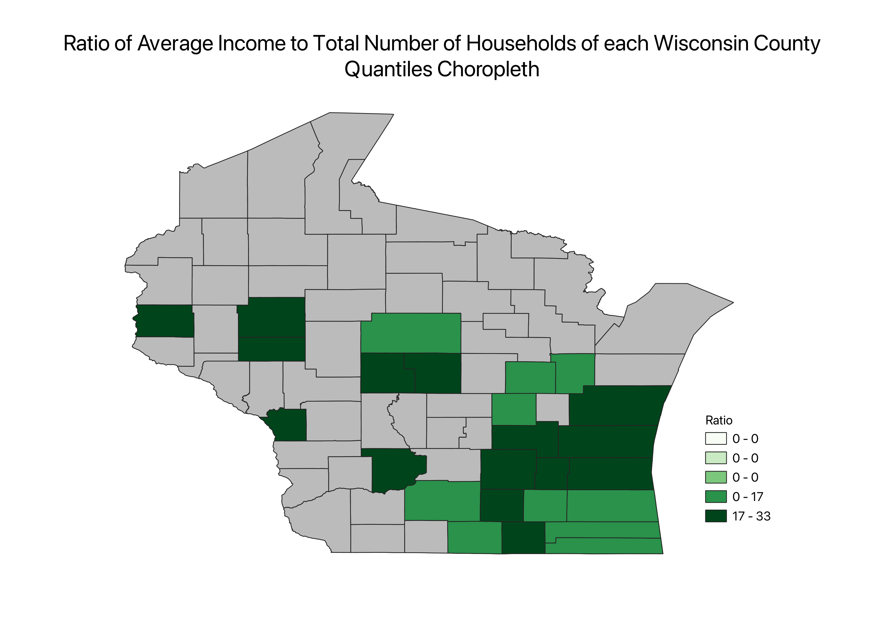
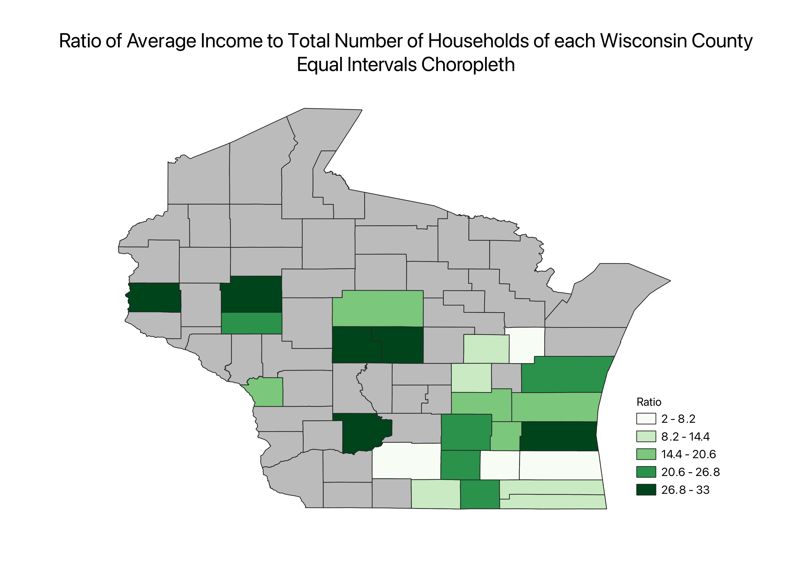
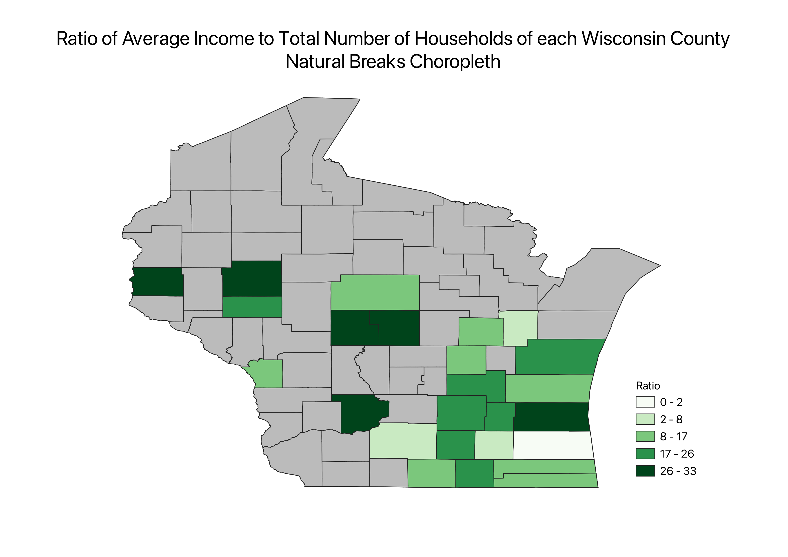

Homework 6 Part 2
The ratio that I created was the average income of each Wisconsin county over the total number of households in each county.
I decided to create this ratio because it would be a better way of comparing the counties' wealth than looking solely at either the
average income or number of households. I multiplied the results by 10 to remove decimals. If the ratio is greater, then there is more
income per number of households. If the ratio is lower, there is less income for more households.

The pros of a quantiles choropleth is that it gives assignments to all of the counties with data. It also reveals distribution around the median.
However, some cons are that there are large differences between two values in the same bin and that it doesn’t depict outliers well. It also has
three empty groups in the legend.

An equal intervals choropleth is good at distributing the counties equally across the quantiles, mainly because this dataset is pretty evenly distributed.
It also splits each bin into equal sizes. On the other hand, this choropleth has a legend that is more difficult to read.

The natural breaks choropleth displays outliers well (like the singular county in the 0-2 bin). One con is that the bins in the legend are unequal.
Another problem with this choropleth is that the dataset is very small, so it doesn't work as well as it should.
Data used for this project:
Data Source